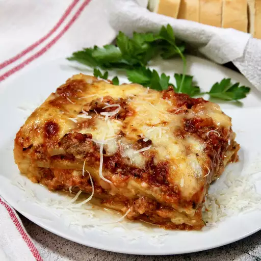

Lasagna

Description
Lasagna is a classic Italian dish consisting of layers of pasta sheets,
hearty meat sauce, creamy béchamel sauce, and melted cheese. It's a
comforting and satisfying meal that's perfect for feeding a crowd or
enjoying as leftovers.
Ingredients
- 1 pound lasagna noodles
- 1 pound ground beef or Italian sausage
- 1 onion, chopped
- 3 cloves garlic, minced
- 1 can (28 ounces) crushed tomatoes
- 2 tablespoons tomato paste
- 1 teaspoon dried basil
- 1 teaspoon dried oregano
- Salt and pepper to taste
- 2 cups ricotta cheese
- 1 cup grated Parmesan cheese
- 2 cups shredded mozzarella cheese
- 2 tablespoons butter
- 2 tablespoons all-purpose flour
- 2 cups milk
- Pinch of nutmeg (optional)
Steps
-
Preheat your oven to 375°F (190°C). Grease a 9x13-inch baking dish. Cook
the lasagna noodles according to the package instructions until al
dente. Drain and set aside.
-
In a large skillet, cook the ground beef or Italian sausage over medium
heat until browned.
- Add chopped onion and minced garlic, and cook until softened.
-
Stir in crushed tomatoes, tomato paste, dried basil, dried oregano,
salt, and pepper. Simmer for 15-20 minutes, stirring occasionally, to
allow the flavors to meld.
-
In a separate saucepan, melt butter over medium heat. Stir in flour to
form a paste, then gradually whisk in milk until smooth. Cook, stirring
constantly, until the sauce thickens. Season with salt, pepper, and a
pinch of nutmeg if using.
-
Spread a thin layer of meat sauce on the bottom of the prepared baking
dish.
-
Arrange a layer of lasagna noodles on top, followed by a layer of
ricotta cheese, Parmesan cheese, mozzarella cheese, and béchamel sauce.
-
Repeat the layers until all ingredients are used, ending with a layer of
mozzarella cheese on top.
-
Cover the baking dish with aluminum foil and bake in the preheated oven
for 25 minutes.
-
Remove the foil and bake for an additional 10-15 minutes, or until the
cheese is melted and bubbly.
-
Let the lasagna cool for a few minutes before slicing and serving.
- Enjoy your delicious homemade lasagna!